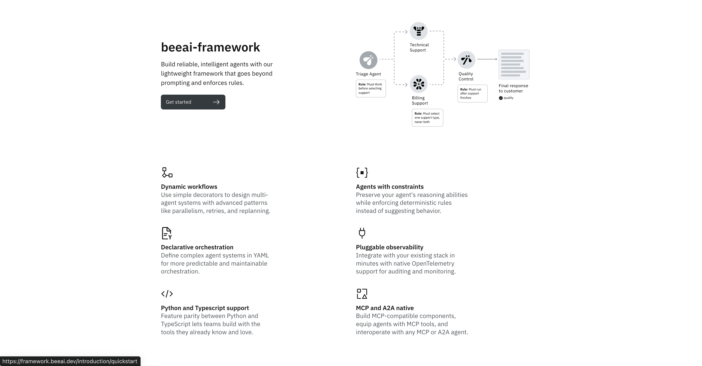
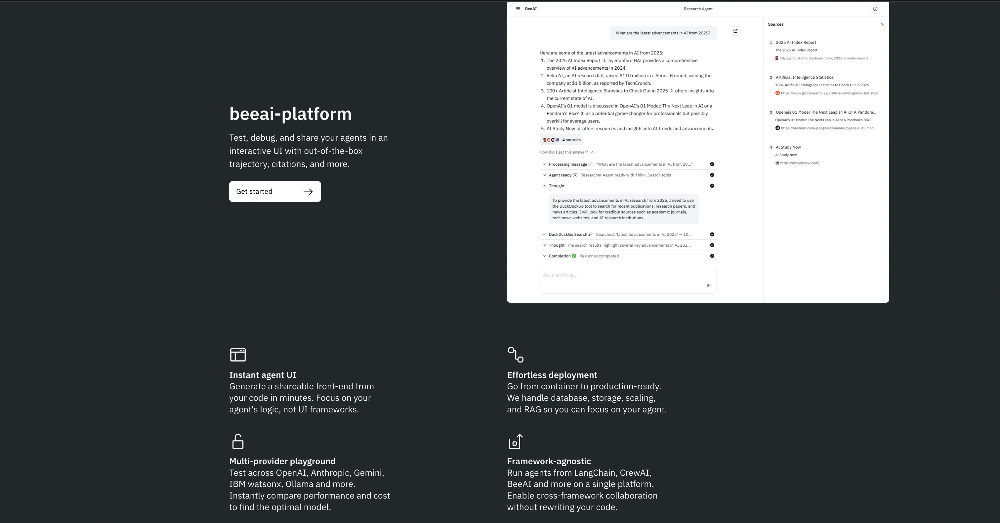

Project Overview
The Healthcare Policy Agent System is an intelligent multi-agent RAG (Retrieval-Augmented Generation) system developed during my internship to revolutionize how healthcare organizations process and analyze CMS (Centers for Medicare & Medicaid Services) policy documents. This sophisticated system leverages cutting-edge AI orchestration to create a seamless workflow for policy analysis, compliance checking, and document restructuring through specialized AI agents working in coordinated harmony.
Key Features and Functionality
- 4 Specialized AI Agents: Built retriever, restructurer, ambiguity detector, and policy improver agents using LangGraph, each optimized for specific aspects of policy document processing and analysis.
- Semantic Document Processing: Utilized ChromaDB and Cohere embeddings to semantically process and index over 100 CMS policy documents, enabling intelligent content discovery and context-aware responses.
- Intelligent Query Routing: Developed an orchestration layer that dynamically routes user queries to the appropriate agent based on content intent, tracks workflow state, and coordinates multi-step validation processes.
- Quality Assurance Integration: Implemented agent-specific validation logic including semantic re-ranking for retrieval accuracy, CMS style compliance checks, and substantiveness validation for policy suggestions.
- Advanced AI Reasoning: Powered by AWS Bedrock with Claude Sonnet 4, providing sophisticated natural language understanding and generation capabilities for complex healthcare policy analysis.
- Containerized Deployment: Designed for scalable deployment via Rancher Desktop with comprehensive containerization strategy for enterprise-grade reliability.
Technology Stack
The Healthcare Policy Agent System was built using cutting-edge AI and cloud technologies:
- LangGraph: Multi-agent workflow orchestration and state management framework for coordinating complex agent interactions.
- AWS Bedrock: LLM infrastructure powering intelligent agent reasoning with Claude Sonnet 4 for advanced natural language processing.
- ChromaDB: High-performance vector database for semantic document storage, retrieval, and similarity search operations.
- Cohere: Advanced embeddings API for semantic understanding and document vectorization.
- IBM ACP Protocol: Multi-step validation and coordination protocol ensuring enterprise-grade compliance and accuracy.
- Monday.com: Project management and workflow tracking platform for coordinating development sprints and deliverables.
- Rancher Desktop: Containerized deployment platform providing scalable, production-ready infrastructure.

Impact and Benefits
This Healthcare Policy Agent System represents a significant advancement in automating complex policy analysis workflows. The system dramatically reduces manual processing time from hours to minutes while maintaining high accuracy standards required for healthcare compliance. By implementing intelligent agent orchestration, the platform ensures that policy analysis follows proper validation chains and maintains CMS compliance standards. The semantic processing capabilities enable healthcare professionals to quickly identify relevant policy sections, detect potential ambiguities, and receive intelligent suggestions for policy improvements, ultimately enhancing the quality and efficiency of healthcare policy management across organizations.